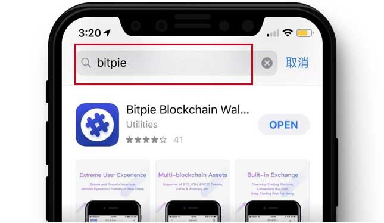

下载苹果商店版本
* 若无法安装或任何原因需要卸载原版本，请先备份好助记词，再重新安装新版本。
海外ID 1：c3s477b@icloud.com
密码：Ee112211
海外ID 2：dzl2mcx@icloud.com
密码：Ee112211
该账户仅供测试使用，建议用户自行申请海外苹果ID。
1、打开 App Store,点击右上角个人中心

2、点击个人中心下方退出登录

3、登录 海外 ID，例：
Apple ID: c3s477b@icloud.com
密码：Ee112211
4、搜索"bitpie"并下载
